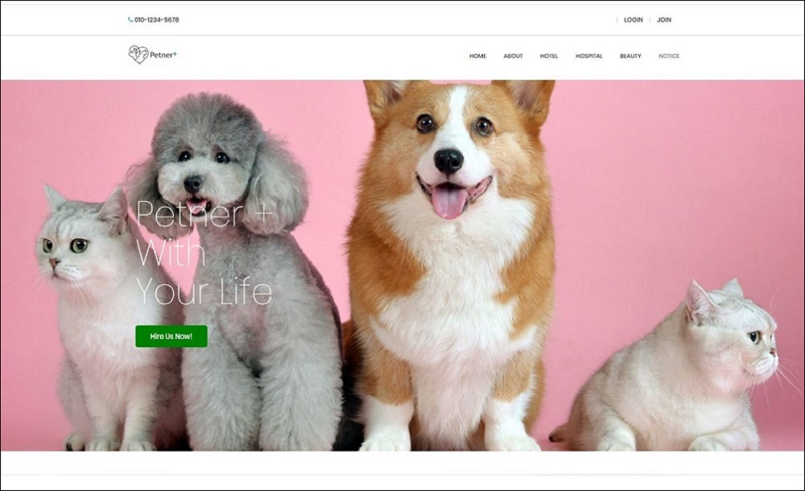

Semi Project
PETNER
ABOUT
Semi Project
구현기간
기획 : 2020-01-10 ~
구현 : 2020-02-05 ~ 2020-02-21
기획 : 2020-01-10 ~
구현 : 2020-02-05 ~ 2020-02-21
주제 : 반려동물을 위한 호텔, 미용, 병원 등의 중개 사이트입니다.
<개발환경>
language : JAVA, HTML5, CSS3, JavaScript
Tools : eclipse, Visual Studio Code, sqldeveloper
DBMS : Oracle DB
Server : Apache Tomcat 8.5
JSP/Servlet 기반의 홈페이지입니다.
Project
|  |
| 프로젝트 메인 화면입니다. 메뉴는 HOME, ABOUT, HOTEL, BEAUTY, HOSPITAL, NOTICE 그 외 마이페이지, ADMIN 페이지 등으로 구성되어 있습니다. |
| ABOUT 페이지 입니다. | HOTEL 메뉴 화면입니다. HOTEL, BEAUTY, HOSPITAL 셋 다 같은 틀로 구성되어 있고 type으로만 구분되어 있습니다. 페이징처리, 검색기능이 되어 있습니다. |
| 세부페이지 기본 화면입니다. | 세부페이지 내용입니다. 사진은 Slide로 넘어가게 처리되어 있습니다. 체크박스로 세부서비스를 미리 볼 수 있습니다. 체크박스 값을 불러온 뒤 split으로 하나하나 나눠서 출력합니다. 아래쪽 메뉴는 3개의 탭으로 나뉘어져 있습니다. 상세정보, 후기, 문의 탭으로 되어있습니다. |
| 예약 페이지입니다. 매장명, 예약자명, 예약자이메일, 전화번호는 기존 값에서 가져옵니다. 날짜를 정하면 숙박일수는 자동으로 입력됩니다. 1박당 요금은 우선 1개값만 정해놓았습니다. |
예약을 완료한뒤에 현쟁결제와 바로결제를 선택할 수 있습니다. 바로결제를 선택하면 결제화면으로 이동한 뒤 결제할 수 있습니다. 결제기능은 IMPORT API을 사용해서 적용 시켰습니다. |
| 상세정보 탭입니다. 매장의 위치를 지도로 보여줍니다. 지하철, 버스, 자가용으로 오는 방법을 보여주고 그 외 매장에서 입력한 세부정보를 표시해줍니다. 지도는 네이버지도 API를 사용했습니다. |
후기 탭입니다. 로그인을 한 사람만 후기를 남길 수 있고, 로그인한 이메일과 후기작성자가 같으면 수정, 삭제가 가능합니다. |
 |
|
| 평점(별점 5점 만점)을 남길 수 있고 평균평점이 HOTEL리스트와 세부페이지 처음에 보이게 됩니다. 후기에는 매장에서 대댓글을 남길수도 있습니다. |
문의 게시판입니다. 홈페이지에 관한 문의는 QNA로 가능하고 각 매장에 대한 문의는 이곳에 남길 수 있습니다. 로그인처리, 대댓글이 가능합니다. |
| HOSPITAL 페이지입니다. HOTEL페이지와 페이지만 나누어 놓았습니다. | 공지사항, QNA, FAQ 게시판입니다. 공지사항, FAQ는 운영자만 작성할 수 있습니다. QNA는 일반회원도 작성할 수 있으며 댓글기능이 있습니다. |
 |
|
| 마이페이지입니다. 개인정보 수정, 탈퇴. 펫 관련 추가, 정보수정,삭제가 가능합니다 자신의 호텔예약 내역을 보여주고, 문의내역도 확인이 가능합니다. |
ADMIN 페이지입니다. 현재 사이트의 운영 정보를 볼 수 있습니다. |
|
|
mycode
세미때 맡은 파트는 AMDIN 페이지였습니다. 주요 기능은
- 현재 매장 등록수, 타입별 매장 등록수, 회원수, 최근 접속자 수, 총 접속자 수 등을 확인 할 수 있습니다.
- 매장을 추가할 수 있고, 내용변경, 사진변경, 삭제 등을 할 수 있습니다.
- 회원목록과 펫 목록을 확인할 수 있습니다. 삭제는 불가능하게 되어 있습니다.
- 예약목록을 볼 수 있습니다.
- NOTICE, FAQ, QNA의 리스트를 볼 수 있습니다.
|
 |
| ADMIN 페이지 메인입니다. 기본적인 정보를 시각적으로 보여줍니다. 최근 접속자 수, 총 접속자 수는 SessionListener로 구현했습니다. |
로그인 세션이 시작되면 SessionListener가 작동합니다 기능은 현재의 날짜를 VISIT 테이블에 적용시킵니다. 그 후 COUNT(*)로 총 접속자 수를 카운트합니다. 최근 일주일간의 접속자 수는 각 날짜별로 COUNT(*)한 뒤 그 숫자를 가져옵니다. |
 |
|
|
매장 추가하기 기능입니다. 라디오 버튼으로 타입을 정한 뒤 매장명, 주소, 전화번호, 메인사진 등을 입력해 줍니다. 매장추가는 매장회원이 아닌 운영자가 직접 추가하는 방법을 사용했는데 운영자가 매장의 정확한 정보를 확인 한 후 추가한다는 컨셉이었습니다. |
ADMIN 페이지에서는 주로 DB에서 리스트를 가져옵니다. 매장을 추가한 뒤에 매장정보 수정, Detail 정보 추가,수정이 가능합니다. 매장 Detail은 앞의 HOTEL등 메뉴의 리스트에 나온 매장을 클릭한 뒤 들어가는 정보들을 추가해 줍니다. |
 |
 |
|
매장 Detail 수정 화면입니다. 매장에 오는 방법등이 있고, 정확한 주소를 적은 뒤 좌표값 검색 버튼을 누르게 되면 지도에 사용하는 X,Y축 정보가 나타납니다. 좌표를 DB에 저장한 뒤 호텔 Detail 화면에서 매장의 지도위치를 보여주는 방법을 사용하고 있습니다. 좌표검색 기능은 KakaoMap API를 사용했습니다. |
매장 Detail의 Servlet 코드입니다. 파일업로드 처리가 되어있고, 최대 3장의 사진을 넣을 수 있도록 구성했습니다. 여러개의 사진업로드 기능을 가진 라이브러리를 사용하고 싶었지만 그 당시에는 실력이 부족해서 그냥 한 컬럼당 1개의 사진만 올릴 수 있는 방식으로 우회했습니다. |
|
|
|
|
|
REVIEW
소감
JSP/Servlet을 활용한 첫 프로젝트였는데 이것저것 많은 시행착오를 겪었습니다.
화면을 구현하는 건 어렵지 않았지만, 반대로 그 화면을 기획하는데에 많이 어려웠습니다.
처음부터 DB를 만든후에 시작하지 않고, 임기응변으로 그때그때마다 DB를 추가하다 보니 혼란스러울 때도 있었습니다.
ADMIN페이지를 맡아서 view-controller-service-dao를 계속 왔다갔다 하면서 어느정도 MVC 구조에 익숙해 진 느낌이었습니다.
다른 조원들이 막힐 때 도와주고, 도움받으면서 협동심을 향상 시켰습니다.